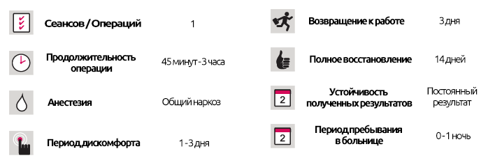

Лазерный липолиз PLUS
Лазерный липолиз PLUS
КРАТКОЕ ОПИСАНИЕ ЛЕЧЕНИЯ

Что такое лазерный липолиз PLUS?
Лазерный липолиз Plus - это метод, который использует лазерную энергию для эффективного «таяния» жира и разрушения жировых клеток, одновременно подтягивая и выравнивая кожу, стимулируя клетки, которые придают коже ее эластичность.
Лазерный липолиз Plus был одобрен американским FDA и проводится с использованием самого современного оборудования, доступного для липолиза. Лазерный липолиз Plus - это революционный метод локализованного истончения, коррекции фигуры и коррекции контуров тела. Лазерный липолиз Plus, также известный как лазерная липосакция, использует две длины волны, чтобы обеспечить успешные результаты как для локального истончения, так и для подтяжки кожи.
Чем Лазерный липолиз Plus отличается от классического лазерного липолиза?
Этот метод использует две длины волны. Первая длина волны предназначена для локализованного истончения, а вторая длина волны обеспечивает подтягивание и подтягивание кожи, создавая важное различие.
Плавление жировой ткани для локализованного истончения: лазерная энергия используется для «плавления» жировой ткани. Энергия лазера препятствует нормальному функционированию жировых клеток и вызывает их гибель и разрушение.
Эффекты, типичные для типа лазера и длины волны, используемые в классическом лазерном липолизе на жировые клетки, ограничены и не очень эффективны при плавлении жировых клеток. Классический лазерный липолиз оказывает ограниченное воздействие на устойчивые и "упрямые" участки жира, которые невозможно удалить с помощью упражнений и диеты.
Тип лазера и длины волн, используемые в лазерный липолиз Plus, специфичны для разрушения жировых клеток. Первая используемая длина волны наиболее эффективна для плавления мембран жировых клеток и удаления жировой ткани. Именно по этой причине лазерный липолиз Plus оказывает огромное влияние на устойчивые и упорные участки жировой ткани.
Длина волны лазера, используемая в классическом лазерном липолизе, не может быть использована для избирательного воздействия на жировые клетки и может привести к большей степени кровотечений и кровоподтеков, нанося вред другим окружающим тканям.
Лазерные длины волн, используемые в лазерном липолизе Plus, могут избирательно воздействовать на жировые клетки, не нанося вреда другим окружающим тканям. Лазер, специально разработанный для этой техники, предотвращает кровотечение и кровоподтеки путем свертывания крови, которая может вытекать из капиллярных вен вокруг жировой ткани.
Натягивание и подтяжка
Коллаген и эластин - это протеины, которые образуют наиболее важные ткани для подтяжки кожи, а также имеют функцию, сходную с клеем между жировыми клетками. Более низкий уровень коллагена и эластина под кожей вызывает провисание.
Things to Pay Attention to Pre-Surgery
A patent who wishes to undergo a nasal aesthetic operation should clearly and precisely explain to his/her doctor what kind of nose they would like and, if need be, provide a photographic example.
Длина волны, используемая в классическом лазерном липолизе, не может привести к образованию коллагеновой (соединительной) ткани, которая обеспечивает гибкость и плотность кожи. У людей, которые похудели с помощью упражнений и диеты, можно увидеть рыхлый, обвисший, каватизированный и волнистый вид, именно по этой причине выделяются и удаляются более жировые клетки.
Things to Pay Attention to Pre-Surgery
A patent who wishes to undergo a nasal aesthetic operation should clearly and precisely explain to his/her doctor what kind of nose they would like and, if need be, provide a photographic example.
Две длины волны, используемые в лазерном липолизе Plus, вызывают производство новых коллагеновых и эластиновых волокон, которые обеспечивают упругость кожи, улучшают качество тканей и локализованное уплотнение. Лазерный липолиз Plus обеспечивает важные и превосходные преимущества для способности кожи выравниваться и подтягиваться, создавая гладкий и ровный вид.
К сожалению, другие ткани, окружающие жировую ткань, повреждаются классическим лазерным липолизом. Это означает, что из-за высокой степени травмы, нанесенной ткани и, как следствие, более высокой степени кровотечения и кровоподтеков, период восстановления дольше. Области тела, которые подвергаются классическому лазерному липолизу, должны быть перевязаны дольше, а также поддерживаться корсетом. Тем не менее, провисание все еще может произойти.
Жирная ткань, расплавленная с помощью лазерного липолиза Plus, удаляется из организма с помощью всасывания при низкогом давлении или, если количество жира низкое, остается на месте, которое естественным образом удаляется организмом. Лазерный липолиз Plus приводит к очень низким уровням травм тканей, что означает более быстрое восстановление, меньше времени на перевязку, а также получение более тугой и подтянутой кожи.
Кому подходит Лазерный липолиз Plus и для каких частей тела?
Лазерный липолиз Plus - решение для женщин и мужчин для:
- Удаления нежелательных участков жира и изменение формы областей, из которых удален жир.
- Подтягивания рыхлой и дряблой кожи.
- В области подмышек, чтобы остановить потоотделение.
Лазерный липолиз Plus гарантирует получение приятных результатов особенно для участков тела, которые не достигли желаемой толщины или плотности, несмотря на физические упражнения и диету.
Лазерный липолиз Плюс обладает высокой степенью эффективности при удалении участков с жиром и провисанием и может быть использован везде, где обнаружены неокрашенные жировые ткани
- живот
- спина
- талия
- бедра
- лицо
- шея и подбородок
- руки
- ноги
- лодыжки
Лазерный липолиз Plus предлагает важные преимущества для мужчин, которые имеют увеличенную грудь (гинекомастия) и пробовали другие методы лечения, а также другие области тела, которые требуют применения более точного метода.
Как проводится лазерный липолиз Plus и когда можно вернуться к нормальной жизни?
Перед процедурой отмечаются участки тела с очагами жира. Затем за 10-15 минут до начала в эти области вводят анестетики, чтобы на пациента не воздействовала тепловая энергия устройства. Затем лазерная головка вставляется в жировую ткань и проходит через каждый слой. Процедура заканчивается, когда ткань получает достаточно тепловой энергии. Для каждой части тела достаточно одного сеанса продолжительностью 15-60 минут. Поскольку разрез для этой процедуры составляет всего 1-2 мм, его можно закрыть одной растворимой строчкой, не оставляя шрамов. Затем область забинтовывается и не открывается в течение 4-5 дней. Для большинства пациентов обезболивающее - это все, что необходимо в первую ночь, и они могут вернуться к своей обычной жизни через несколько дней.
Лазерный липолиз Plus является причиной, по которой многие пациенты, которые не любят рисковать и хотят получить идеальные, постоянные результаты, выбирают эстетику для локального истончения и подтягивания. Процедура доступна только в очень немногих ведущих клиниках в Турции.